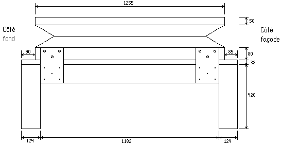
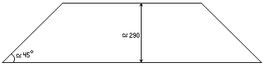
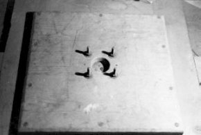
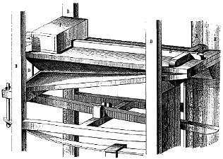
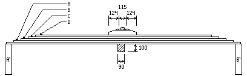
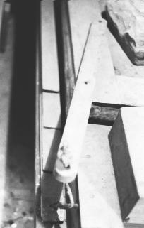
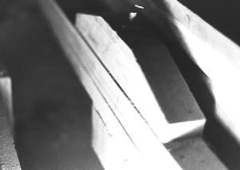

Grand Temple de l'Église Réformée
La soufflerie.
Le régulateur. |
|



Vue de côté (C) du soufflet régulateur sur son socle.

Schéma approximatif d'une éclisse du soufflet régulateur (petit côté).
Le régulateur. |
|
Vue de côté (C) du soufflet régulateur sur son socle.
Schéma approximatif d'une éclisse du soufflet régulateur (petit côté).
|
|  | |
Régulateur (avant restauration) |
Soupape de sécurité (vue extérieure) |
La pression est actuellement obtenue à l'aide de pierres posées sur le soufflet. Celles-ci ne sont manifestement pas d'origine ; BEAUCOURT et VOEGELI nous ayant trop habitué à la régularité qui n'est pas respectée dans ce domaine1. La restauration de 1992 a permis de rétablir une pression de 80 millimètres à la colonne d'eau.

Fig. II.2a: 'Spannbalg'.
(Töpfer-Allihn, Pl. XXIV, fig. 2)De plus, des lames de bois faisant ressort bordent le soufflet reservoir. La lame la plus longue comporte, à ses extrémités, un morceau de corde long de quelques centimètres, lui même relié à une barre de sapin. La disposition originelle de ce dispositif fut facile à retrouver. Chaque barre - il y en à quatre en tout - était vissée dans l'un des quatre coins de la table du soufflet réservoir (les trous de vis correspondent exactement). Le soufflet en se gonflant bande par l'intermédiaire des barres, les quatre lames de bois qui deviennent un véritable ressort et entretiennent donc la pression. « Ces ammortisseurs compensent l'action de la pression sur les plis rentrants ; en effet, plus la table monte, plus la force exercée par le vent tend à soulever la charge. Les lames de ressort ont donc une action progressive assurant ainsi une pression particulièrement stable. »2 Ce système est employé couramment en Allemagne depuis le début du XVIIIe siècle (nottamment par Gottfried Silbermann) tant pour les soufflets cuneïformes, que pour ceux à table parallèle et a été décrit (entre autre) par J.G. TÖPFER (voyez l'illustration marquée fig.2 pl. 24), maître à penser de VOEGELI.
|
Dimensions des lames-ressorts : lame A : 3050 × 56 × 11 mm. lame B : 2760 × 56 × 11 mm. lame C : 2460 × 56 × 11 mm. lame D : 2150 × 56 × 11 mm. |
 |
|
|

Relais ressort-table soufflet |

Fixation centrale des lames ressort |
Notes :
(1) De plus, dans son Méthode pour la révision des orgues d'Églises, VOEGELI précise bien qu'il lui semble important que les poids des soufflets soient fixés de telle sorte qu'ils ne puissent pas s'enlever.
(2) Laurent PLET, Rapport sur la restauration de l'orgue BEAUCOURT et VOEGELI du Temple Réformée de Saint-Hippolyte-du-Fort (Gard).